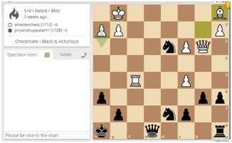
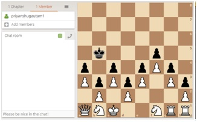

I was first acquainted with chess when I was around 7-8 years old at the Indoor sports club here in Varanasi I remember being astonished at seeing the emotion engulfing silence with which people used to play I also remember hearing the words like check there. My first chess set was a birthday present alongside many other games such as scramble and snake & ladders. Initially the knight as a piece just seemed a nightmare for me because of the way it moved on top of that everyone used to describe it in a freaking different way. My Initial games were mainly with my elder brother and my father. But it was not frequent until our first laptop arrived which as luck would have it had chess titans pre-installed in it. My growth began from there I remember vivdly the games that began from me losing to lvl 1 all the way upto winning at lvl 9. While in Goa I played quite a lot of chess beginning from the U-12 Intra school (A Gold for my house). Then the cluster event U13 (A Bronze for the school). At the regionals though I suffered quite devastating losses and actually had a pretty bad tilt ending the tournament 4.5/9 after scoring 3.5 in the first 5 games. It was around Class 7th that I actually began goung to a chess class It was there that I was introduced to formal opening and knowledge of chess. I played Giuoco Piano and Ruy lopez until recently thanks to gothamchess and agadmator. I also played two open tournaments during this time scoring 4/7 and 3.5/8 respectively and but I never actually got a fide rating as all of these tournaments were organized By AICF and not FIDE. After coming back to benaras I played chess much less frequently until recently in online events in 2019 and 2020-21. Further below are some of my games in online chess I hope you enjoy the ride as I walk you through them (To chess followers: The chess.com games will be a gif as they do not allow link embedding although I will provide a link at the bottom to go through the game).
The game you see on the left was my first rapid game (I play a lot more blitz normally). This was an Evans Gambit game my favourite opening against higher rated opponents and in must-win situations. he played the Ba5 line (Expected from a 2000+) and I preceeded with Qb3 and was ultimately able to open the center I was thinking that he would go for 14...o-o-o but he went with the whole queen side expansion idea instead. At 22.Qa3 I thought that he would go for a Queen trade but I guess he missed Qxa6 and Bg5 idea and that f6 was not possible. After 27. Rfe1 I rlly thpught that he would resign but he found that Bishop sac and Ne4+ and with the past pawns rolling down the board and my horrible back rank it was really hard not to freak out Until at 30 Rd4 when he just completely blundered his rook in astounding fashion.
If the first game was a grind. Then this one is a recovery. It was basically an open sicilian Najdrof with Bg5. There was nothing much happening until move 17 on which god knows how I just left my knight hanging on c3 but right from there....It was nothing to lose so I just went all out trying to create something on the king side but until move 27 it was pretty much clear that I had no counter attack whatsoever. With so many defenders around I just could not break through I sacrrificed a knight out of desperation on move 27 ...But this long built pressure ultimately paid off when black made a blunder hanging both of his bishops after 35...Ke7..According to me at times it can be utterly difficult to defend when you are up material but the other is just coming at you with all guns blazing. Or in the words of Emanuel Lasker The hardest game to win is a won game
Okay So after the two above games naturally in a chronological order the next is an escape. The next game is a classic example of a game played in a tilt. glimpses of which you will see sprinked all over. The first one being not playing Bxb2 for 5 consecutive moves from move 5-10 and then the premove 17.Rxd5 just horribly blundering a piece from there on it was just stalemate that could save me and I gave away everything just to have that chance and finally it did happen when on move 52 despite being up 11 points of material he played e4 and that one move blew that all away.

